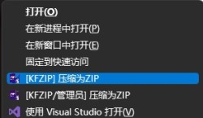
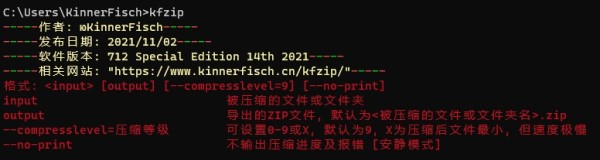
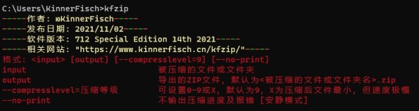
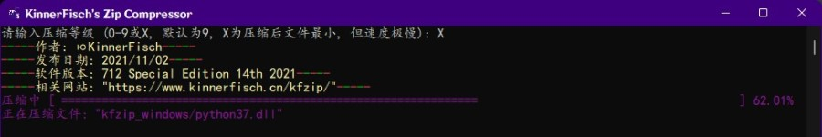

程序简介
这是一个用Python写的Zip压缩软件与其他程序相比, 本程序在压缩率上优于大部分程序
在某些文件或文件夹的压缩中, 本程序压缩后的文件甚至能小于7-Zip的压缩结果 (仅指Zip)
本程序的X级压缩使用了7-Zip的部分代码
使用方法及下载链接
不管是什么操作系统, 若您的电脑安装并正确配置了Python3.6及更高版本, 可使用python运行kfzip_setup.pyz来安装该程序, 使用方法请参见程序特色第4点如果您是在Windows系统中, 推荐您下载以下文件:
[64位安装包] kfzip_installer.exe
[32位安装包] kfzip_installer_x86.exe
[64位免安装] kfzip_windows.zip
[32位免安装] kfzip_windows_x86.zip
Windows版本低于Windows7的可能无法运行本程序!
使用方法:
若您使用有安装包的版本, 可右键要压缩的文件夹或文件 (Windows11中还需要点击"显示更多选项"), 单击"[KFZIP] 压缩为ZIP"

若您使用的是免安装的版本 (仅支持命令行操作), 请参见程序特色第4点
程序特色
1. 压缩文件夹时会先进入文件夹再进行文件读取和压缩处理, 并不会把指定文件夹名写入压缩包如压缩以下文件夹:
Directory
|- SubDirectory
|- |- File1
|- |- File2
|- File3
则压缩包结果如下:
Directory.zip
|- SubDirectory
|- |- File1
|- |- File2
|- File3
而不会像其他程序压缩的结构如下:
Directory.zip
|- Directory
|- |- SubDirectory
|- |- |- File1
|- |- |- File2
|- |- File3
2. 压缩包内不会有文件夹的属性及信息
由于文件夹信息也会占用压缩包的空间, 所以减少写入该信息可缩小压缩包占用空间
这也会导致压缩包内不会出现空文件夹
注意: 部分软件可能无法识别到文件夹, 这种情况下还请自行使用其他工具进行压缩
由于文件夹信息也会占用压缩包的空间, 所以减少写入该信息可缩小压缩包占用空间
这也会导致压缩包内不会出现空文件夹
3. 压缩时若遇到文件压缩后大小大于等于文件压缩前大小, 则写入原文件
压缩后大小大于压缩前大小这是无法预测的情况, 而目前大部分压缩软件似乎并没有意识到有这种情况 (本人用过的其他压缩软件仅7-Zip有这个判断)
在压缩时程序会把压缩后结果储存在缓存目录 (Linux为"/tmp/", Windows为变量"%Temp%"), 并在压缩完毕后进行比较
若压缩后文件占用空间小于压缩前文件占用空间, 才写入压缩后文件
之所以如果文件压缩后大小等于原文件大小写入原文件, 则是因为考虑到解压所需时间
在两者大小相同的情况下, 如果解压压缩包, 解压程序任然需要时间进行解压操作, 而写入原文件则无需解压程序花费时间进行解压操作
4. 支持命令行式操作!
本程序在Linux中需自己配置path或丢入path包含的目录下
本程序在Windows中, 若您使用的是免安装版 (kfzip_windows.zip或kfzip_windows_x86.zip), 需自己配置path或丢入path包含的目录下;
若您使用的是安装包版 (kfzip_installer.exe或kfzip_installer_x86.exe), 一般会自动并正确配置path
使用方法: (<尖括号内为必填参数>, [中括号内为选填参数])

<程序名> <被压缩文件或文件夹> [输出文件(压缩包)文件名] [--compresslevel=压缩等级] [--no-print]
若不指示输出位置, 默认为输入文件名 + ".zip"
"--compresslevel=压缩等级" 可指示压缩文件或文件夹使用的压缩等级
可设置 0-9或X, 0为不压缩, 直接写入; 不设置压缩等级时, 默认为9, X为压缩后文件最小, 但速度极慢
"--no-print" 指压缩过程中无任何输出, 可以一定程度上加快压缩速度
举些例子:
kfzip Directory -- 压缩Directory并输出到Directory.zip
kfzip Directory Files.zip -- 压缩Directory文件夹, 输出到Files.zip, 输出进度条
kfzip Directory --compresslevel=5 --no-print -- 使用5级压缩Directory文件夹, 压缩过程中不输出任何信息
本程序在Linux中需自己配置path或丢入path包含的目录下
本程序在Windows中, 若您使用的是免安装版 (kfzip_windows.zip或kfzip_windows_x86.zip), 需自己配置path或丢入path包含的目录下;
若您使用的是安装包版 (kfzip_installer.exe或kfzip_installer_x86.exe), 一般会自动并正确配置path
使用方法: (<尖括号内为必填参数>, [中括号内为选填参数])

<程序名> <被压缩文件或文件夹> [输出文件(压缩包)文件名] [--compresslevel=压缩等级] [--no-print]
若不指示输出位置, 默认为输入文件名 + ".zip"
"--compresslevel=压缩等级" 可指示压缩文件或文件夹使用的压缩等级
可设置 0-9或X, 0为不压缩, 直接写入; 不设置压缩等级时, 默认为9, X为压缩后文件最小, 但速度极慢
"--no-print" 指压缩过程中无任何输出, 可以一定程度上加快压缩速度
举些例子:
kfzip Directory -- 压缩Directory并输出到Directory.zip
kfzip Directory Files.zip -- 压缩Directory文件夹, 输出到Files.zip, 输出进度条
kfzip Directory --compresslevel=5 --no-print -- 使用5级压缩Directory文件夹, 压缩过程中不输出任何信息
5. 命令行式界面
无论是在命令行操作, 还是用右键单击"[KFZIP] 压缩为ZIP", 都是命令行式界面哦~

注意事项
1. 如果您是将目标文件夹压缩为给其他程序读取的zip时, 可能会导致java等其他程序出错 (目前已知不可使用该程序压缩Minecraft Java版光影包), 原因见程序特色第2点2. 在压缩某些文件夹或文件时可能提示PermissionError或直接闪退, 这时请保证程序有足够权限读写当前目录, 必要时可使用管理员模式打开powershell或cmd使用命令行式操作, 使用方法见程序特色第4点
3. 压缩文件或文件夹时会产生临时文件在缓存目录 (Linux为"/tmp/", Windows为变量"%Temp%"), 请保证缓存目录有足够空间使本程序进行压缩操作 (所需空间取决于被压缩文件夹或文件)
4. 本程序的X级压缩只为Windows版本设计, Python源码版及Linux版 (其实也是Python源码) 则无该压缩等级